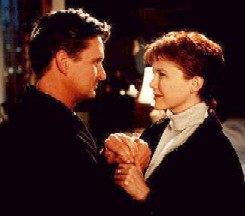

Contents | Features | Reviews | News | Archives | Store |
 |
|
| Movie Credits | Buy It! |
The American President
Review by Carrie Gorringe
 |
Directed by Rob Reiner. Starring Michael Douglas, |
Any film buff will tell you that Rob Reiner's new film, The American President, owes a tremendous debt to a Frank Capra movie of the 1930s. During that time period, Capra made films that are part of the canon of American filmmaking, such as It Happened One Night (1934), Mr. Deeds Goes to Town (1936), a sparkling adaptation of the Kaufmann-Hart play, You Can't Take It With You (1938), and, of course, Mr. Smith Goes to Washington (1939). In collaboration with the brilliant screenwriter Robert Riskin, Capra's films followed a basic but effective formula: lots of snappy, witty dialogue, followed by a segue into a mini-morality tale (usually involving the victory of some ordinary American against the cynical machinations of the rich and powerful) and the prerequisite "happy ending". To its credit, The American President acknowledges its debt to Capra with all due haste; the film conveniently provides the audience with a reference to his work within the first twenty minutes of screen time, thereby attempting to place its members in the appropriate mindset.
In keeping with the earlier Capraesque tradition, the narrative of The American President is of the fairly straightforward boy-meets-girl type. When President Andrew Shepherd (Douglas), a widower whose wife died three years earlier during his campaign for the presidency, falls for a lobbyist named Sydney Allen Wade (Bening) and decides to establish a relationship with her. Unfortunately, only Shepherd seems to be unaware of the consequences of his actions, for the new love of his life strolls in at about the same time that a reelection campaign must get under way. Of course, he has a commanding lead in the polls by way of his sixty-three-per-cent approval rating, but his aides A.J. (Sheen) and Lewis (Fox) vehemently disapprove, claiming the voters will not accept a president with a love life which is out in the open and of the non-marital variety. To complicate matters ever so significantly, Ms. Wade is an environmental lobbyist who wants the President to come up with a bill that would force the U. S. auto industry to reduce emission levels by twenty percent; Shepherd and his aides are willing to go for ten percent, knowing that the Congressional representatives from the Land o' Detroit have enough power to block any other Executive branch requests coming their way. Trouble comes in the form of Senator Robert Munson (Dreyfuss), an individual of such malevolent lugubriousness that he acts like a graduate of the Robert Dole School of Charm. Smelling a political opportunity the way a shark smells blood, Munson goes after Shepherd's, primarily because, as he confesses to his fellow politicos-in-crime, he has no other substantive issues at hand upon which to launch a presidential campaign.
So far, so good? Unfortunately, no. Both Reiner and his scriptwriter, Aaron Sorkin, were so intent upon recreating the essence of a Capra film that they forgot about the mechanics of so doing, mechanics that are very much dependent upon the historical development of the genre itself. The very best of screwball comedy in the 1930s depended upon the struggle that the protagonists would enact against mutual attraction and especially against any physical expression of that attraction beyond the most fleeting of kisses. In short, the genre is fuelled by the conversion of thwarted sexual desire into antagonism; the narrative is consequently sustained through the suspense of wondering when and how the protagonists' self-control would break down. Historically speaking, the screwball comedy perfectly expressed the frustrations of its Depression-era audiences, many of whose members had experienced the frustration of postponing personal plans or failed marriages in light of economic difficulties or knew someone who had. Audience members could live vicariously through on-screen partnerships which were formed with immunity from socio-economic forces (it is hardly coincidental that the protagonists of screwball comedies either were wealthy, or had rich parents).
With this understanding in mind, the premise of The American President can't sustain itself, simply because there are very few social or economic mechanisms within the narrative to prevent the President and his lady from getting together as soon as possible. Granted, their first kiss is interrupted by the necessity of having to bomb Libya, but somehow or other this baby-boom couple, whose sensibilities were formed courtesy of post-World War II prosperity and the sexual revolution, can't possibly find too many impediments, either financial or psychological, in the way of their relationship, and the audience knows it. Not surprisingly, the narrative is forced to rely upon the political tension between Shepherd and Munson to carry forward, and consequently the pace of the film slackens to a crawl, because the audience knows that Shepherd is indifferent to political intimidation; his open wooing of a lobbyist is a direct statement of that indifference, or at least it's a statement of his indifference to appearances of partisanship. Not only has the focus of the film been shifted, but it has been shifted onto something that the narrative has already dismissed as irrelevant. All the audience can do is watch this lame horse lumber toward the finish line, anticipating every move long in advance.
Reiner and Sorkin also seemed to lose sight of the fundamental tenets of American governmental operations. The emissions bill that the Shepherd administration is trying to, well, shepherd through the legislative labyrinth known as the U.S. Congress is referred to in the film as a "White House Bill". As any student in a Civics class can (hopefully) tell you, only the legislative branch of the United States government (the Congress) can introduce and draft legislation. If the President wishes to influence legislation, he has to do so through members of committees in the House of Representatives and the Senate by persuasion alone; one of the members must take up the President's proposed legislation as his or her own. If his administration is unpopular, and/or if there are Congressional elections pending that year, his hopes of actually succeeding in his task are about the same as those of the proverbial snowball in hell. Further to this point, despite all the talk about the tremendous power that an American President has at his disposal (the so-called "Imperial Presidency Syndrome" so beloved of political scientists), it is the Congress that holds most of the cards. Needless to say, its members expect to be treated by the White House with a level of deference appropriate to the level of power that they hold. This film implies that a mere Presidential aide like Lewis can scream obscenities at a Senator with impunity in an attempt to shore up a Senator's wavering support for legislation. In actual fact, the aide would have been fired for an act of such purblind stupidity (however, a president might be able to get away with it, depending upon his opponent and the amount of privacy from the press he is afforded -- the latter issue being the most problematic in this day and age). This sort of carelessness might be excused by saying that the context is only a pretext for romance. However, such contempt for details only undermines the credibility of the filmmakers; how can they expect the audience to empathize with Shepherd's dilemma when, through their errors, they distort and then minimize the precariousness of the situation in which he finds himself? More seriously, if American filmmakers can't describe their government correctly, who can?
At least the acting in The American President is more than competent. Douglas conveys just the right amount of both Presidential gravity and boyish charm. Bening displays a definite gift for light comedy; her face has the same sort of gee-whiz glow that Jean Arthur used to display in her Capra films, like a child with her hand in the cookie jar and not an adult within miles to stop her. Sheen has a subtle drollery that is most endearing in a comic foil. Fox also brings a great deal of energy to his whiz-kid role. Only Dreyfuss comes out smelling like less than a rose; granted, his villainous role doesn't give him much room to maneuver, but he doesn't do much with little, preferring to spend much of the time bellowing. In one particularly unfortunate scene, he punctuates his dialogue with heavy wheezing, only to lose the gesture in the rest of the film; not only that, but the wheezing is so unnatural as to be laughable (Capra's usual villains, such as those played by Edward Arnold and Claude Rains, never lacked breath, especially Arnold, who looked like he could knock over an opponent with one good exhale, if his indifference to human suffering wasn't sufficient to stun the opponent with dread). Nevertheless, all of them are dragged down by those problems already mentioned beyond their collective ability to prevent the film's premature demise.
The American President might be perceived as a light and witty cinematic anecdote, as long as you have no knowledge of its superior cinematic predecessors. If you want to know how weak this piece of pseudo-Capra really is, go out and rent some of the real thing listed above, then go and see this epigone. Or, better yet, just rent the real thing.
Contents | Features | Reviews | News | Archives | Store
Copyright © 1999 by Nitrate Productions, Inc. All Rights Reserved.